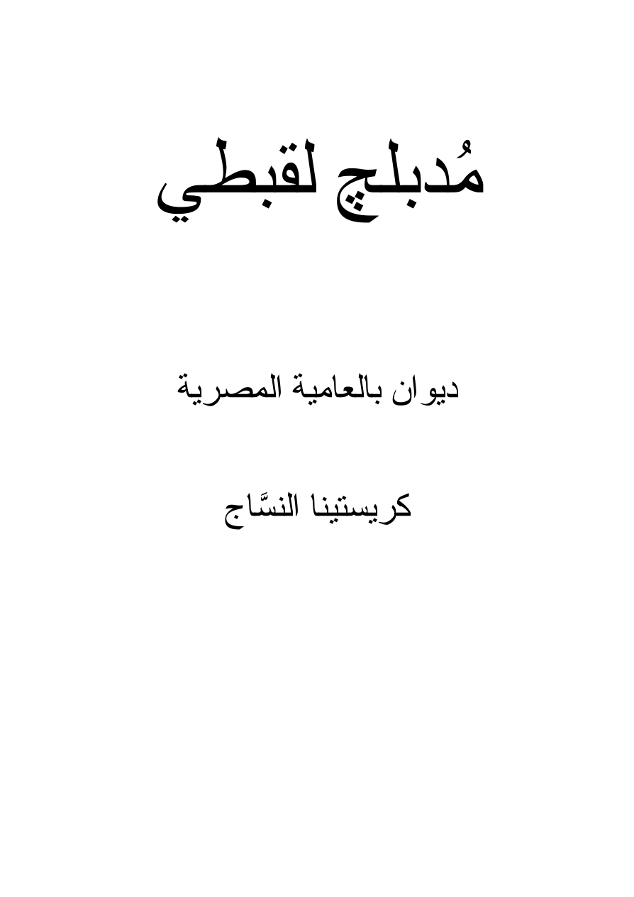

شعر العامية
لغة قريبة من نبض الحياة اليومية، تحمل الصورة والإيقاع والتفاصيل الإنسانية.
الموقع الرسمي
شاعرة وكاتبة مصرية، تكتب الإنسان وتحولاته بلغة تجمع بين الصورة الشعرية والبناء السردي.
كريستينا ناصر فهمي سعد جاد، المعروفة أدبيًا باسم كريستينا النسّاج، كاتبة وشاعرة مصرية من محافظة كفر الشيخ.
تتناول في أعمالها قضايا الإنسان والتغيرات الاجتماعية، مع التركيز على استخدام الصور البصرية المكثفة واللغة الشعرية والسردية المركبة.
تمتد خبرتها إلى القصة القصيرة، وشعر العامية، والنص المسرحي، والسيناريو، إلى جانب إدارة وتنظيم ورش الكتابة الإبداعية وتطوير المحتوى الأدبي للمؤسسات والمبادرات الثقافية.
لغة قريبة من نبض الحياة اليومية، تحمل الصورة والإيقاع والتفاصيل الإنسانية.
اشتغال على التفاصيل والشخصيات والتحولات الاجتماعية في مساحة سردية مكثفة.
خبرة في البناء الدرامي، والمعالجة، وتطوير الشخصيات.
إدارة وتنظيم ورش الكتابة الإبداعية وتطوير المحتوى الأدبي للمبادرات الثقافية.

ديوان شعر بالعامية المصرية · 2026
إصدار شعري للكاتبة كريستينا النسّاج، صادر عن دار صفصافة للنشر عام 2026.
للاستفسار عن الكتاب ←«أكتب لألتقط ما يمرّ سريعًا: وجهًا، تفصيلة، خوفًا، أو حكايةً لا تجد من يرويها.»
— كريستينا النسّاجللدعوات والفعاليات وورش الكتابة والتعاونات الأدبية والثقافية.